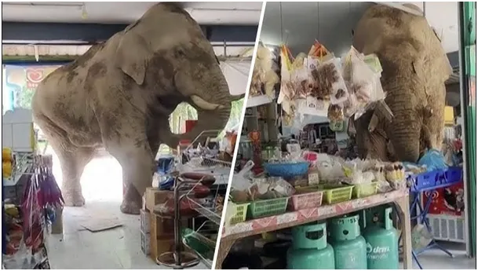
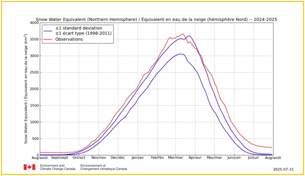
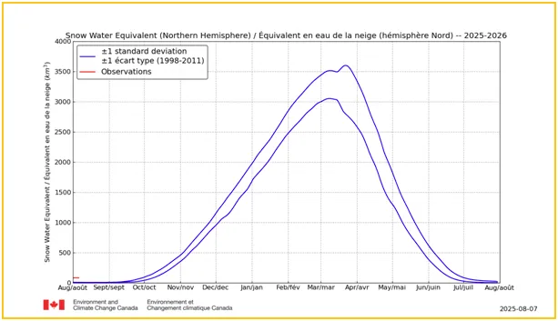
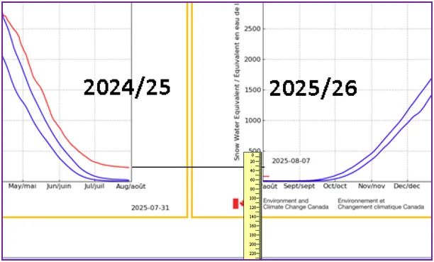
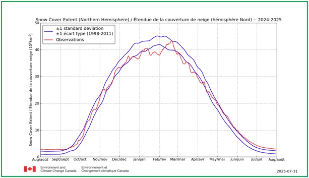
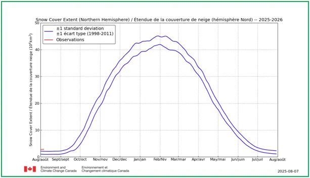

Co robi słoń w salonie warszawka?
Jak co roku w Arktyce odbywa się cud znikającego śniegu. Odpowiednie służby, które w nazwie mają zaklęcie "Środowisko i Zmiana Klimatu Kanady" precyzyjnie każdego dnia mierzą ilość i zasięg pokrywy śnieżnej. Na półkuli północnej minimum występuje latem, dlatego od pierwszego sierpnia rozpoczyna się nowy, roczny cykl pomiarowy. Pierwszy wykres pokazuje ekwiwalent wody uwięzionej w śniegu w Arktyce a wyrażony w km^3 (kilometrach sześciennych). Metr sześcienny wody waży tonę (1000 kg), a kilometr sześcienny 10^9 (miliardów) ton, czyli 10^12 (bilonów) kg.


To jest jedna jednostka na wykresie, w szczycie sezonu mamy wody uwięzionej w śniegu 3500 takich jednostek. Jezioro Bajkał, największy słodki zbiornik na planecie, ma ok. 23 600 km^3 wody, więc jest to ok. 15% Bajkału. W sumie nie dużo na tle idiotycznej narracji kryzysu wodnego.
Woda spada za darmo z nieba, w tym sezonie w Polsce w nadmiarze. Warto przypomnieć pani/panu minister klimatu wiedzę z przedszkola: słoneczko ogrzewa oceany, powstają chmurki, wiatr niesie chmurki daleko, daleko i w naszym ogródku pada deszczyk lub zimą śnieg. Potem woda płynie do rzeczki, rzeczką do oceanu po drodze paruje i wszystko się zaczyna od nowa.

Tymczasem nasi "eksperci" raportują nam dwie liczby, ilość śniegu na wykresach 1 i 2 oraz zasięg pokrywy śnieżnej na wykresach 3 i 4. O ile w nocy pierwszego sierpnia obszar pokryty śniegiem się nie zmniejszył to tej nocy ktoś po cichu wywiózł z Arktyki w Kosmos 150 km^3 zamarzniętej wody. To 150 miliardów ton. Poważna akcja jak na zielone ludziki.


Opisałem już wiele przykładów naturalnych zjawisk dowodzących, że od połowy lat 90`tych wraz ze spadkiem aktywności słonecznej w długim 120 letnim cyklu termika planety opada. W strefach polarnych co roku na zeszłoroczny śnieg pada nowy akumulując się i tworząc coraz grubsze warstwy lodu. Jeśli układ Słoneczny w swej podróży przez Galaktykę nie wpadnie w obszar o innym natężeniu promieniowania kosmicznego przez najbliższe 30 lat ten trend będzie zachowany, aby ok. 2045-2050 roku się odwrócić. Nie mamy na to wpływu.
Poza zjawiskami kosmicznymi śledzimy też zjawiska cywilizacyjne i obserwujemy bardzo intensywne wprowadzanie religii klimatystycznej. Jej kapłani posuwają się do ordynarnych oszustw a propagandziści udający "dziennikarzy" nie widzą słonia siadającego na stoliku, na środku salonu warszawka, który swym zadem miażdży z hukiem ich piękne, różowe ale badziewne filiżanki.
P.s. Opisany wyżej proceder widzimy regularnie od 3 lat, od kiedy obserwuję raporty śniegowe. Linki poniżej:
pawelklimczewski.pl/2024/08/15/cud-znikajacego-sniegu/
pawelklimczewski.pl/2023/08/09/opn-czyli-odwieczne-prawo-natury/